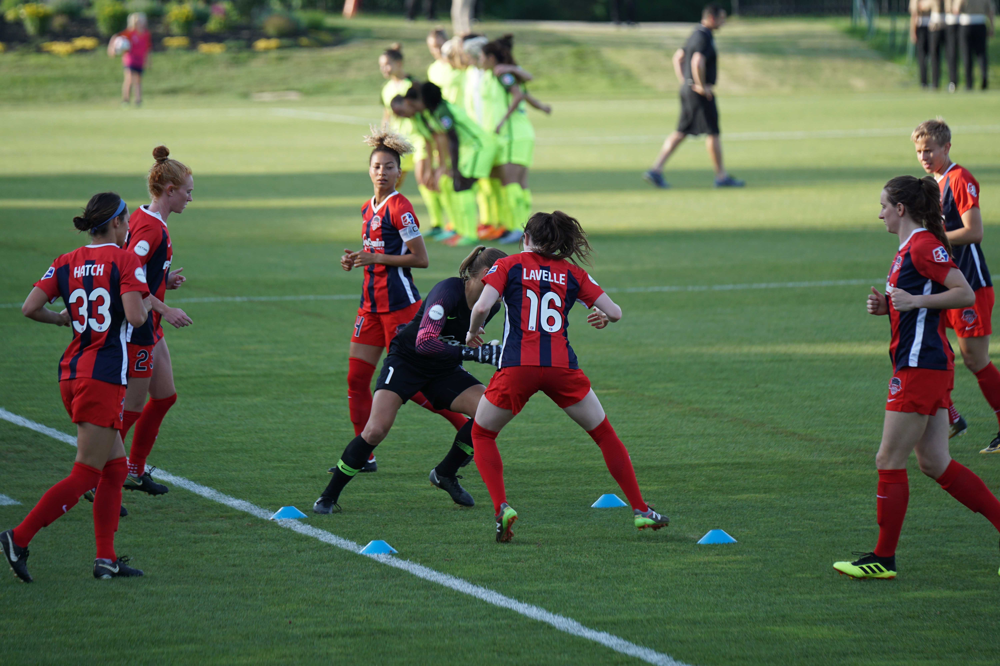

Classes prépas
Si vous avez suivi une classe préparatoire aux grandes écoles d'ingénieurs (CPGE) en informatique, vous
pouvez postuler à l'ESINI via le concours commun Mines-Ponts. Ce concours est organisé chaque année et
permet de
Après le concours d'entrée
Si vous n'avez pas suivi de classe préparatoire, vous pouvez tout de même postuler à l'ESINI en passant
par le concours d'entrée. Ce concours est organisé chaque année et permet de sélectionner les candidats
sur base de leurs résultats scolaires et de leur motivation.
Après des années en école d'ingénieurs
Si vous avez déjà suivi des études d'ingénieur dans une autre école, vous pouvez être admis à l'ESINI via
la validation des acquis. Cette procédure permet de valider votre parcours scolaire antérieur et de vous
permettre de poursuivre vos études à l'ESINI.
Voici quelques exemples de débouchés pour les diplômés d'ESINI:
-
Le développeur informatique:
ESINI forme les éléves à devenir développeur informatique dans tous
les domaines
-
Ingénieur en cybersécurité:
lors du choix de vos matières il est possible de se specialiser dans la
cybersecurité
-
Ingénieur en intelligence artificielle:
à ESINI nous formons les élèves sur l'inteligence
artificielle
-
Ingénieur en bases de données:
dans toutes les matieres nous utilisons les bases de données, il
est donc possible de se spécifier dans les bases de données
Les diplômés d'une école d'ingénieurs en informatique peuvent également poursuivre des carrières dans des
domaines tels que la recherche, l'enseignement et la gestion de projets informatiques. Ils peuvent également
être employés par des entreprises de tous les secteurs, y compris les services financiers, l'industrie
manufacturière, les services de consultation, les télécommunications et les gouvernements. En tant
qu'ingénieur en informatique, vous aurez de nombreuses possibilités de carrière dans un large éventail de
domaines et de industries.
Vie associative de notre école d'ingénieurs
Notre école d'ingénieurs est très active en termes de vie associative. Nous avons plusieurs clubs et
associations
qui permettent aux étudiants de s'investir et de développer leurs passions.
Clubs sportifs
Nous avons plusieurs clubs sportifs qui permettent aux étudiants de pratiquer leur sport favori en
compétition ou
simplement pour le plaisir. Nous avons des équipes de football, de basketball, de tennis, de natation,
etc.

Équipe de football de notre école d'ingénieurs
Associations culturelles
Nous avons également plusieurs associations culturelles qui organisent des événements tels que des
expositions,
des concerts, des débats, etc. Ces associations permettent aux étudiants de découvrir de nouvelles
cultures
et
de s'ouvrir sur le monde.
Débat organisé par une association culturelle de notre école d'ingénieurs
Associations professionnelles
Enfin, nous avons des associations professionnelles qui permettent aux étudiants de se familiariser avec
le
monde
du travail et de développer leurs compétences professionnelles. Ces associations organisent des
conférences,
des
ateliers, des visites d'entreprises, etc.

Atelier organisé par une association professionnelle de notre école d'ingénieurs